You can use continuous positions even with a discrete position scale - this allows you (e.g.) to place labels between bars in a bar chart. Continuous positions are numeric values starting at one for the first level, and increasing by one for each level (i.e. the labels are placed at integer positions). This is what allows jittering to work.
Arguments
- ...
common discrete scale parameters:
name,breaks,labels,na.value,limitsandguide. Seediscrete_scalefor more details- expand
a numeric vector of length two giving multiplicative and additive expansion constants. These constants ensure that the data is placed some distance away from the axes.
Examples
ggplot(diamonds, aes(cut)) + geom_bar()
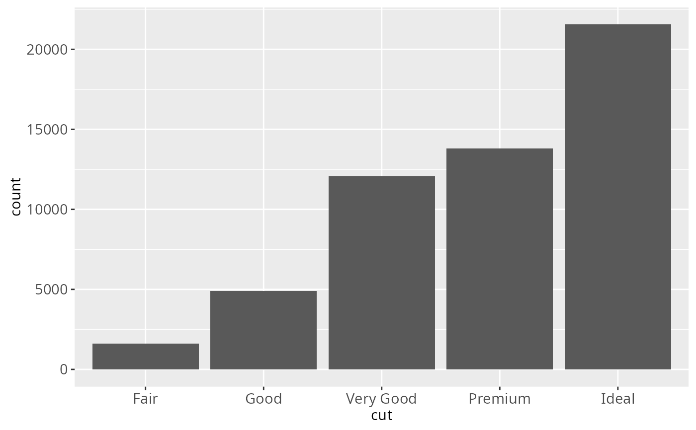
# \donttest{
# The discrete position scale is added automatically whenever you
# have a discrete position.
(d <- ggplot(subset(diamonds, carat > 1), aes(cut, clarity)) +
geom_jitter())
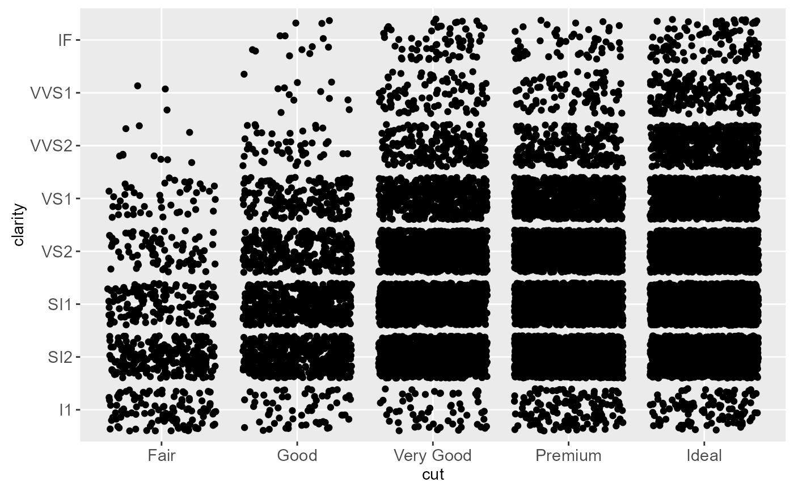
d + scale_x_discrete("Cut")
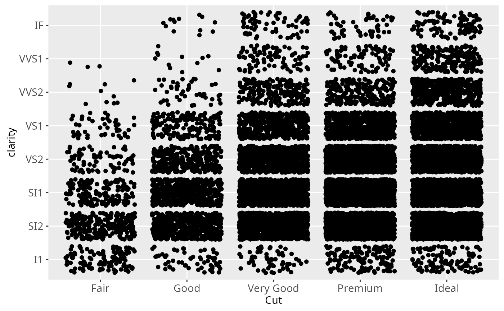
d + scale_x_discrete("Cut", labels = c("Fair" = "F","Good" = "G",
"Very Good" = "VG","Perfect" = "P","Ideal" = "I"))
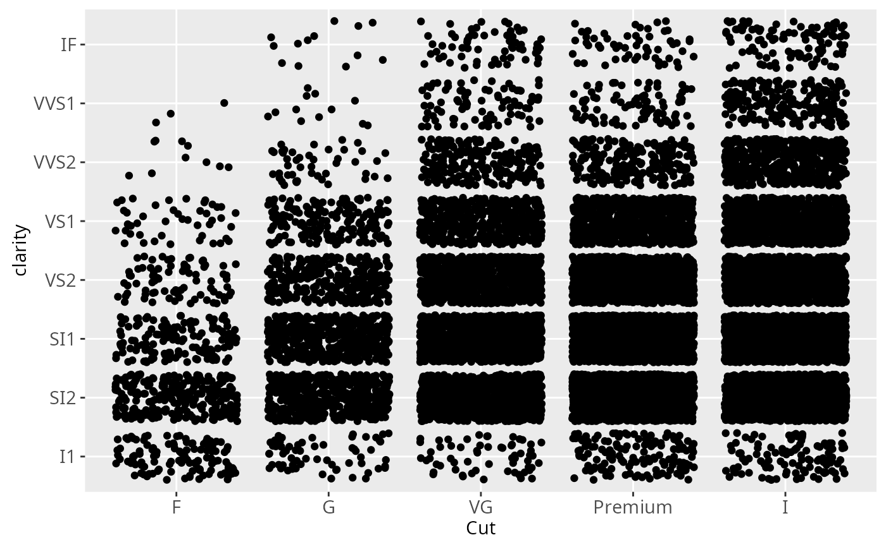
# Use limits to adjust the which levels (and in what order)
# are displayed
d + scale_x_discrete(limits = c("Fair","Ideal"))
#> Warning: Removed 11189 rows containing missing values (geom_point).
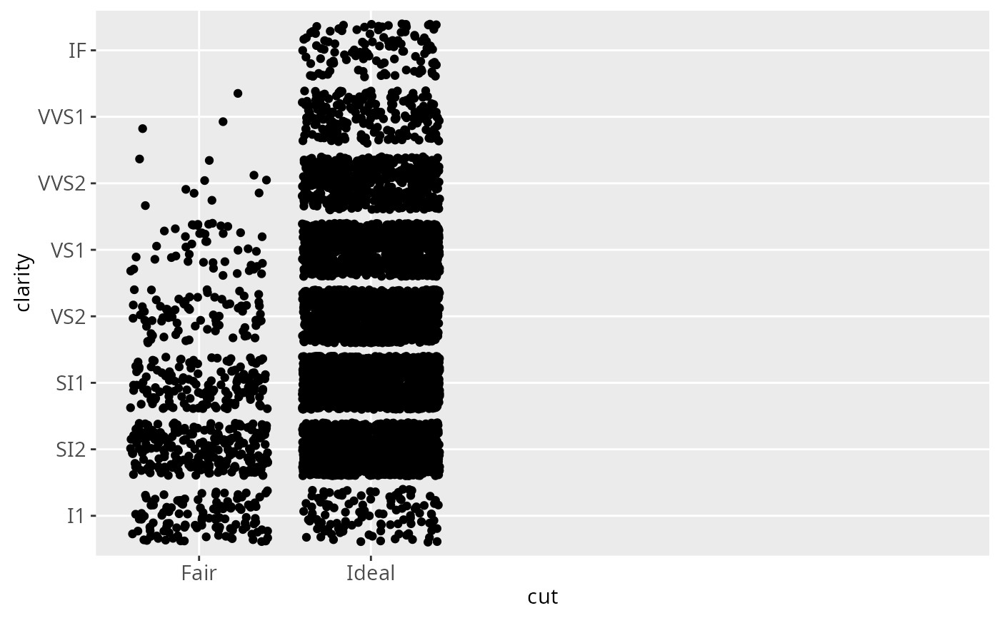
# you can also use the short hand functions xlim and ylim
d + xlim("Fair","Ideal", "Good")
#> Warning: Removed 9610 rows containing missing values (geom_point).
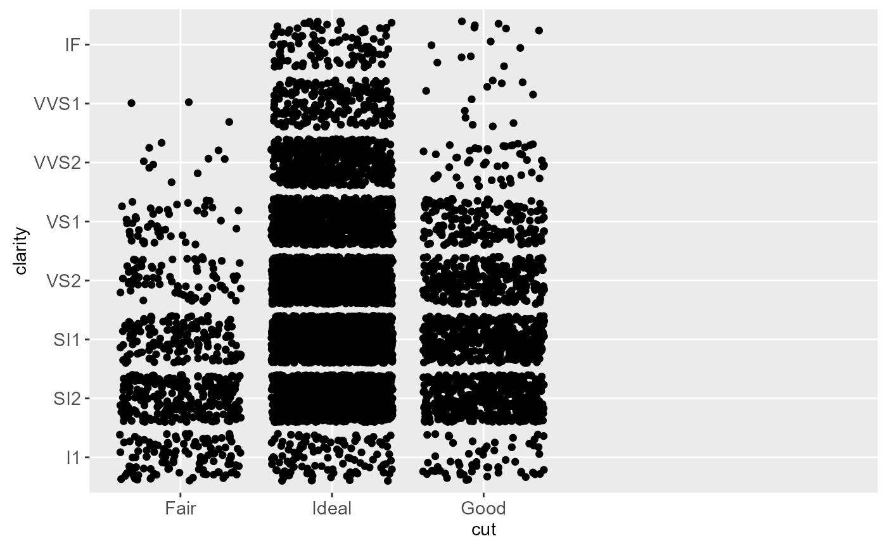
d + ylim("I1", "IF")
#> Warning: Removed 16770 rows containing missing values (geom_point).
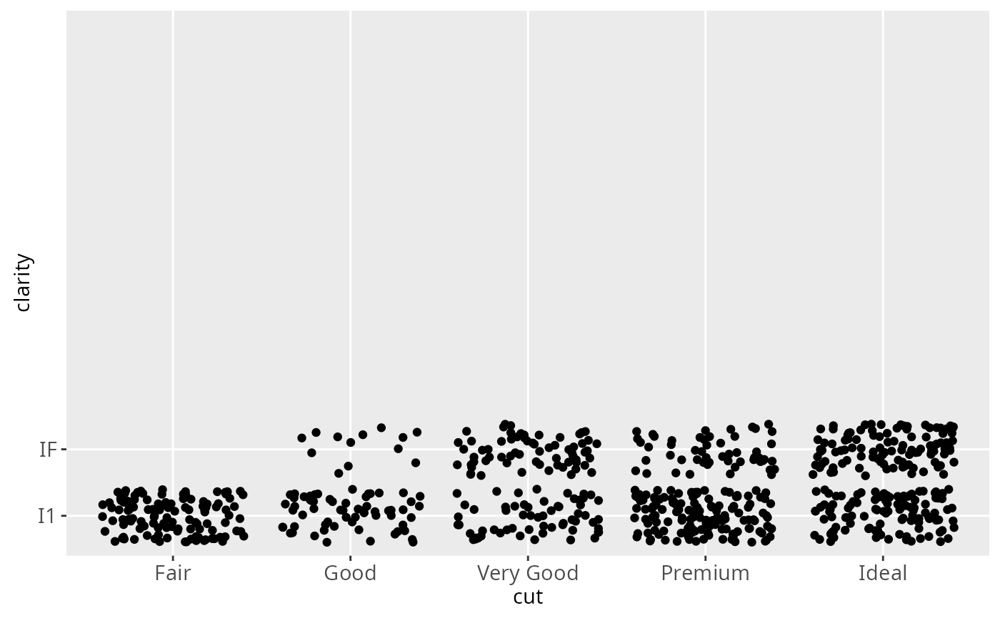
# See ?reorder to reorder based on the values of another variable
ggplot(mpg, aes(manufacturer, cty)) + geom_point()
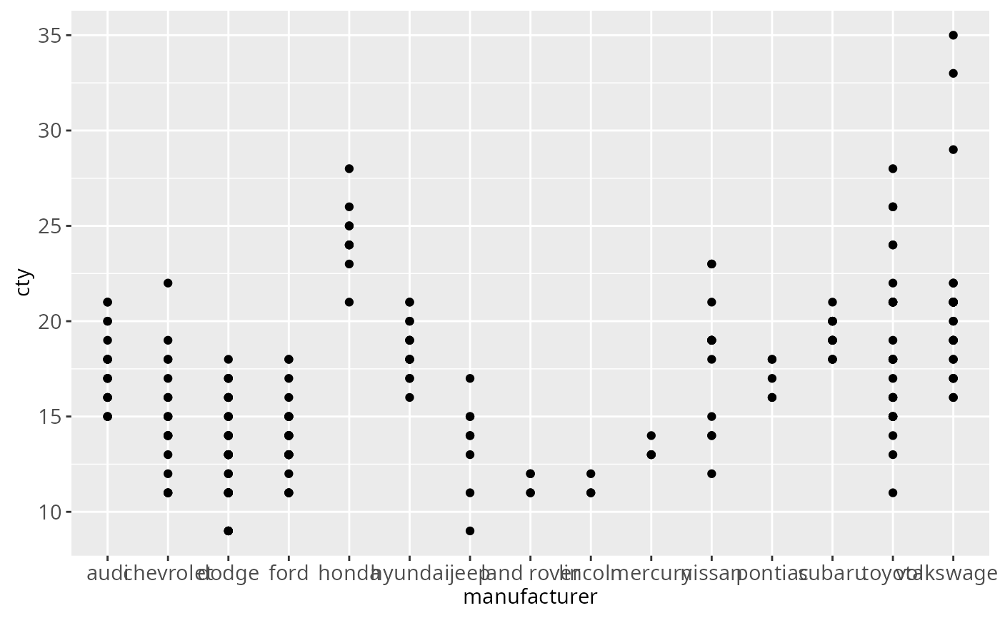
ggplot(mpg, aes(reorder(manufacturer, cty), cty)) + geom_point()
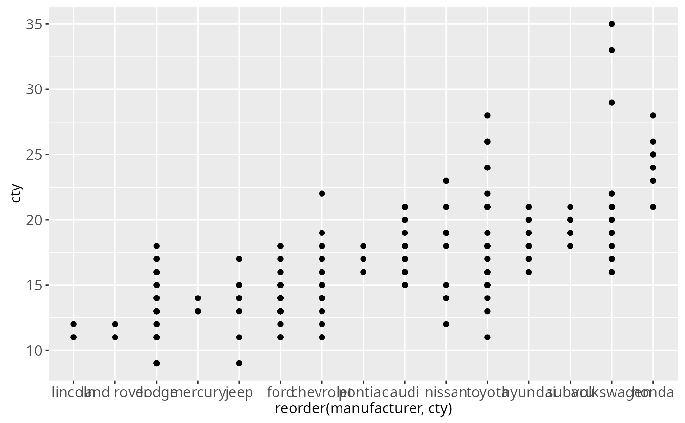
ggplot(mpg, aes(reorder(manufacturer, displ), cty)) + geom_point()
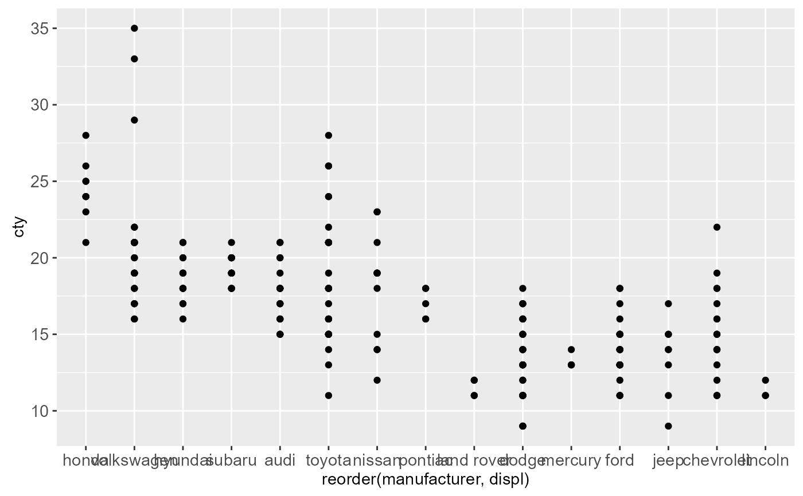
# Use abbreviate as a formatter to reduce long names
ggplot(mpg, aes(reorder(manufacturer, displ), cty)) +
geom_point() +
scale_x_discrete(labels = abbreviate)
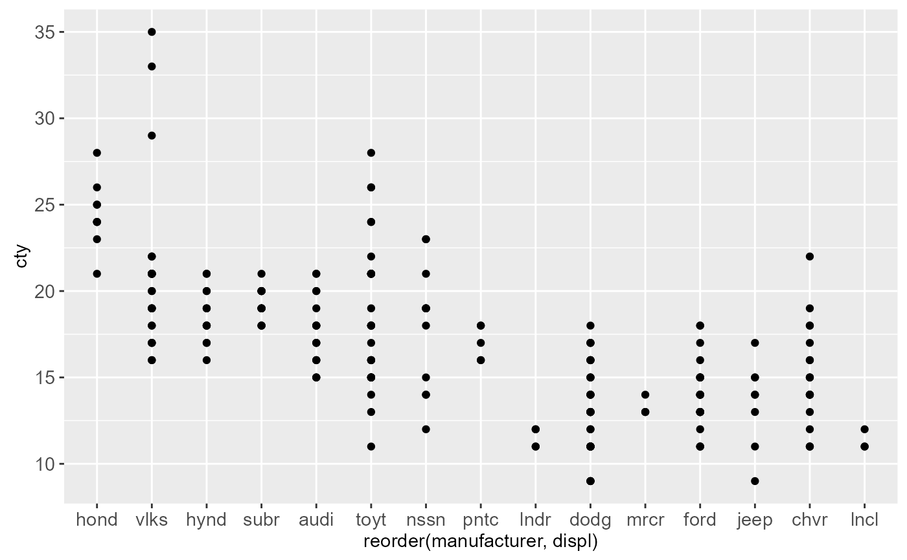
# }